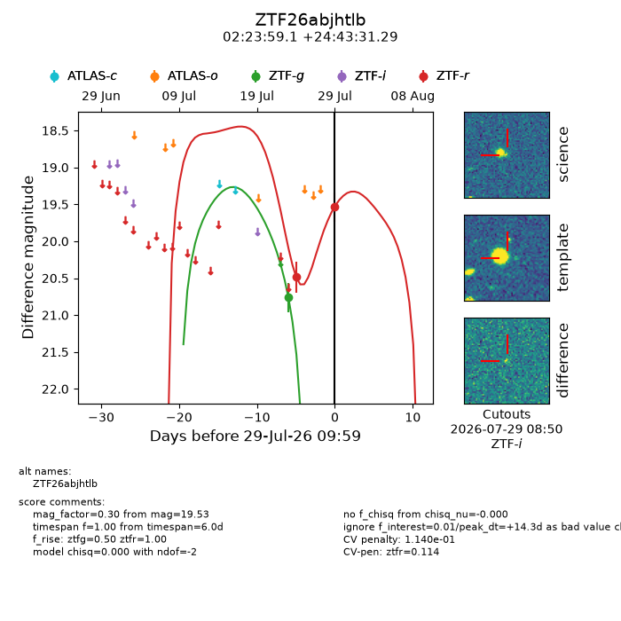
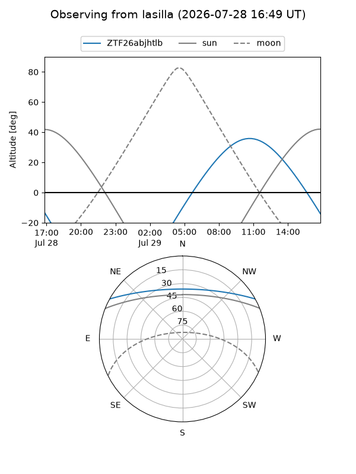
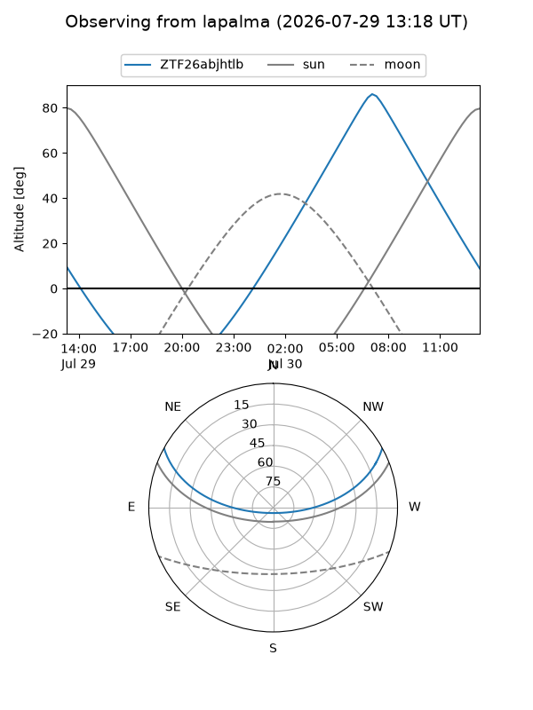
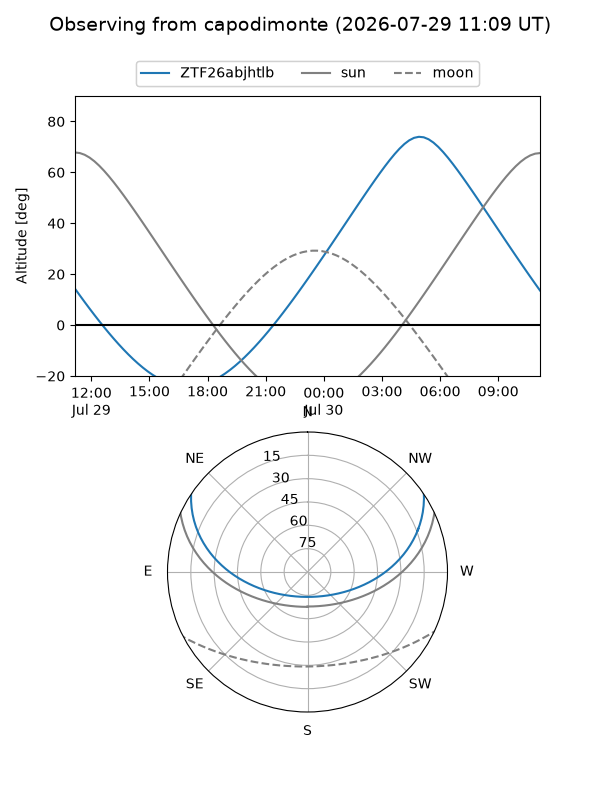
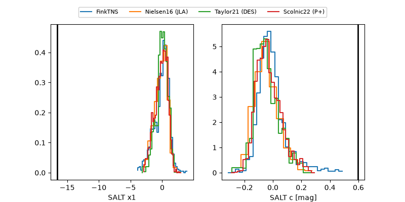

ZTF26abjhtlb
Target ZTF26abjhtlb at 2026-07-29 10:01
Aliases and brokers:
FINK-ZTF: ztf.fink-portal.org/ZTF26abjhtlb
Lasair-ZTF: lasair-ztf.lsst.ac.uk/objects/ZTF26abjhtlb
ALeRCE-ZTF: alerce.online/object/ZTF26abjhtlb
Direct TNS query: direct search
alt names
ZTF26abjhtlb (ztf,fink_ztf)
Coordinates:
equatorial (ra, dec) = 35.9961,+24.72536
equatorial (HMS+DMS) = 02:23:59.07,+24:43:31.29
galactic (l, b) = (148.2881,-33.54927)
Flags:
peak dt: +14.3
likely cv: !!
Photometry:
last ztfg=20.76, ztfr=19.53
1 ztfg, 2 ztfr detections
Lightcurve

Visibility



Additional plots
